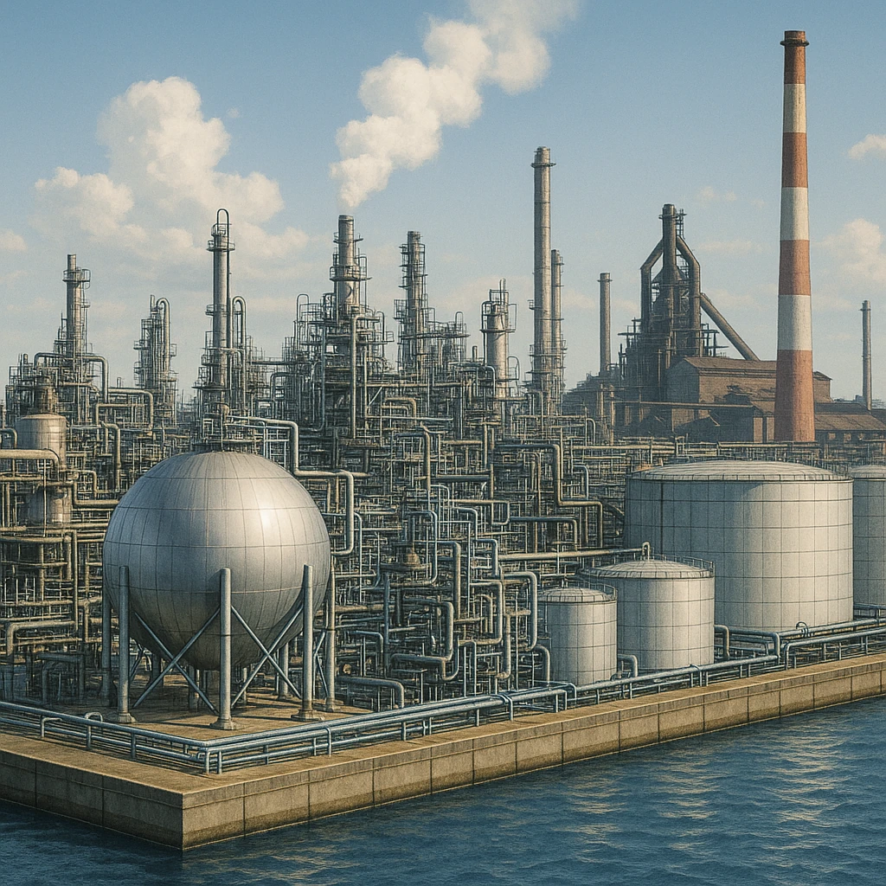

Ⅴ-5
商工業
海をうめて、
コンビナート
を並べた
Ｂ
京葉工業地域
… 東京から千葉にかけての
海岸を埋め立てて
造った工業地域。
主な都市
千葉市・市原市・君津市
。東京湾の東岸にならぶ
いつできた
第二次世界大戦後
に埋め立て地に広がった
何の工業
石油化学工業
と
鉄鋼業
。製鉄所や石油化学コンビナート、火力発電所が並ぶ
石油・石炭製品の都道府県別出荷額の割合（2021年）
千葉 19.2%
神奈川 18.0
岡山 11.9
大阪 9.8
山口 6.7
その他
千葉が全国1位、神奈川が2位。化学工業（千葉7.7%）・鉄鋼業（千葉9.7%）でも上位に入る。
テスト頻出
「埋め立て地に製鉄所・火力発電所・石油化学コンビナート」が①の特色。

第17章 関東地方
SEED EDUCATION